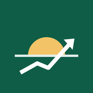

Open SignalsStocks to watch at today's open
Each US trading morning, we scan the 500 biggest US companies and list the ones showing the strongest signs of rising when the market opens.
How does this work?
What we look at
- Early trading. Some trading happens before the market officially opens. If a stock is already rising then, it often opens higher.
- How busy it is. A move with lots of buyers behind it is more convincing than one with just a few trades.
- Recent direction. Stocks that have been rising this week or this season tend to keep some of that energy.
- Warning signs. If a stock has shot up very fast, we're more cautious about it.
We combine these into one signal strength score and show the top stocks, with the main reasons in plain words.
What "signal strength" means
It shows how many of our signals point the same way, and how strongly. Strong means several clear signs line up at once; moderate means the signs are there but weaker. It is not a promise that the price will go up. Even strong signals are often wrong.
When are new picks ready?
Every US trading day (Monday to Friday, except US holidays), about an hour before the market opens.
For information and education only. This is not financial advice and not a recommendation to buy or sell anything. Stock prices can fall as well as rise, and past patterns do not guarantee future results. Always do your own research.